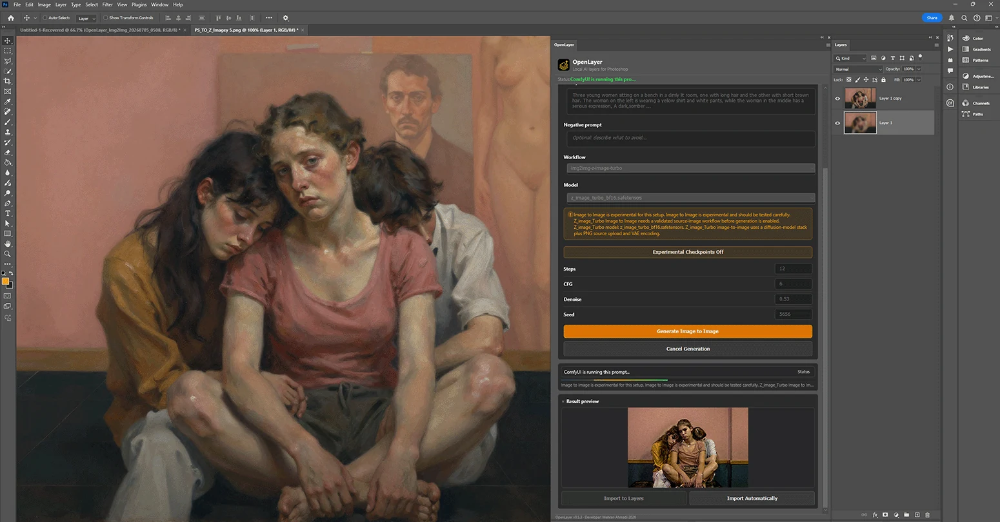
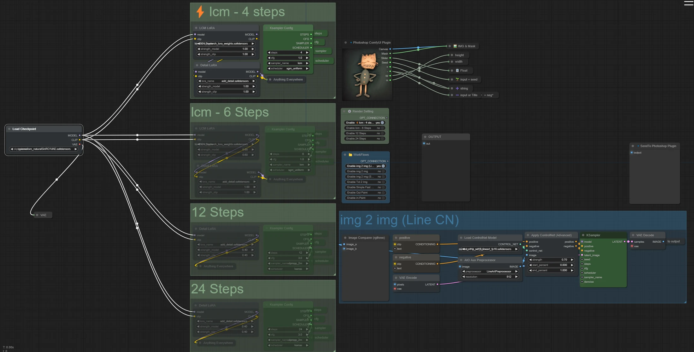

Making OpenLayer
A free Photoshop plugin for ComfyUI, built out of my own workflow

The problem was the round trip
For a long time my AI work ran on a loop that never quite closed. I would build an image in Photoshop — mask it, correct it, get the structure right — then export a flat PNG, walk it over to ComfyUI, queue a graph, wait, find the output folder, drag the result back into Photoshop, realign it, and start again. Projects like Head Reconstruction and False Restorations are made of dozens of those laps.
The generation was never the slow part. The commuting was. And every lap cost something real: the moment an image leaves Photoshop as a flat PNG, the layers, the masks and the edit history are gone. You get a picture back, but not a document you can keep working in.
I wrote up that manual workflow at the time — it is still here as Photoshop to ComfyUI, built on a LineArtProcessor and ControlNet setup, and standing on Nima's comfyui-photoshop, which first showed me the two programs could talk at all. OpenLayer is what happened when I stopped documenting that loop and started trying to remove it.
 Photoshop
Photoshop
What it had to be
Before writing anything I set three rules, and they decided most of the architecture on their own.
- Local, always Your art, your GPU, your machine. No cloud round trip, no credits, no subscription, and nothing about the work leaving the room.
- Layers, not pictures Results arrive as editable Photoshop layers, placed where they belong, so a generation is a step in the document rather than a replacement for it.
- Open, so it survives me MIT licensed and developed in public, because a tool this close to someone's working files should never be a black box.
How it is put together
OpenLayer is an Adobe UXP plugin written in TypeScript, so the panel lives inside Photoshop and can read and write the document directly. The part that took the longest to get right is the piece in the middle: a small local hub that sits between the panel and a ComfyUI server, keeps a socket open, tracks which jobs are in flight, and hands results back to the layer they came from.
That middle layer is doing the work the old manual loop used to make me do by hand — capturing the right region, sending it with the right conditioning, and knowing where the answer goes when it returns. Everything else in the plugin is built on top of it.

What it does now
The current alpha covers the operations I actually reach for in a working session, with Stable Diffusion, SDXL and Flux models:
- Text to image
- Image to image
- Sketch to image
- Inpaint and outpaint
- Upscale
- Prompt from layer
- Live painting
- Multi-reference composition
- Unflatten a flat image into layers
- Layer tools for sending work back out
Unflatten is the one I did not expect to care about as much as I do. It takes a finished flat image and separates it back into layers — which is exactly the loss I started out complaining about, run in reverse.
Still an alpha
Version 0.20.0 is honest about being early. It needs Photoshop 2024 or later and a ComfyUI install you are already comfortable running, and it will occasionally lose an argument with a custom node graph. It is free, the source is public, and the issue tracker is the fastest way to change what it does next.